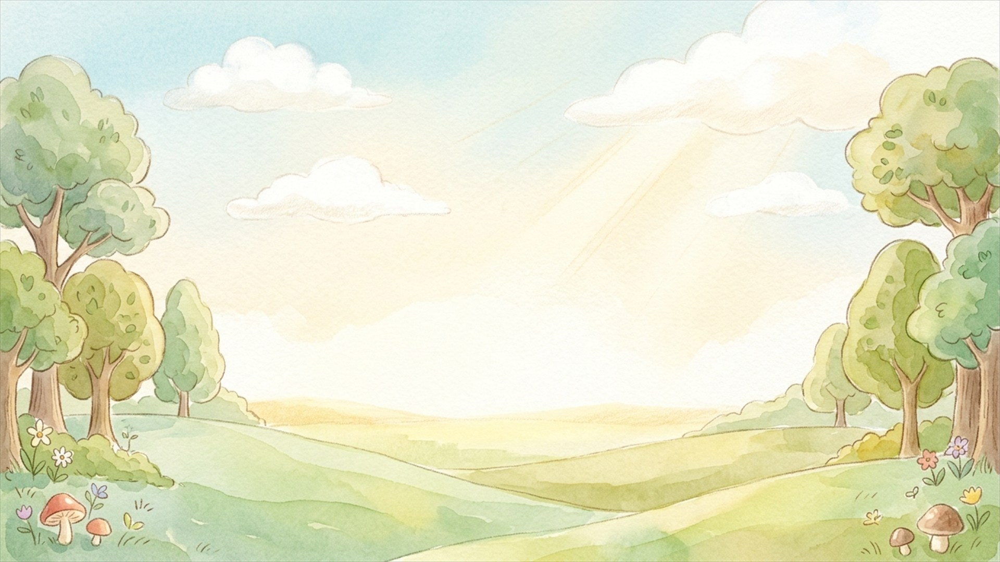

✦
✦
★
✦
★
字
黑體
🔊
音效開
⛶
全螢幕
✨ 注音符號 挑戰 ✨
⭐
森林小動物集星星
⭐
大聲唸出注音符號，一起幫森林小動物收集閃亮星星吧！
1. 選擇練習範圍
中上
ㄅ ～ ㄖ
共 18 個注音
中下
ㄗ ～ ㄦ
共 19 個注音
全部注音
ㄅ ～ ㄦ
全部 37 個注音
2. 選擇題數
⭐ 5 題（預設）
10 題
全部（18 題）
3. 出題順序
🎲 隨機出題
📋 照順序
🏠
首頁
中上 ㄅ～ㄖ
0 / 5 顆星
黑
🔊
⛶
好棒喔！⭐
✦
✦
✦
✦
ㄅ
太厲害了！✨
⭐
🌟
⭐
太棒了！集滿 5 顆星星！
森林小動物都為你拍拍手！
✨ 這一輪一起唸過的注音 ✨
🔄
再玩一次
🏠
回首頁換範圍
🏠
要回到首頁嗎？
目前的星星進度會重新計算喔！
繼續集星星
回首頁